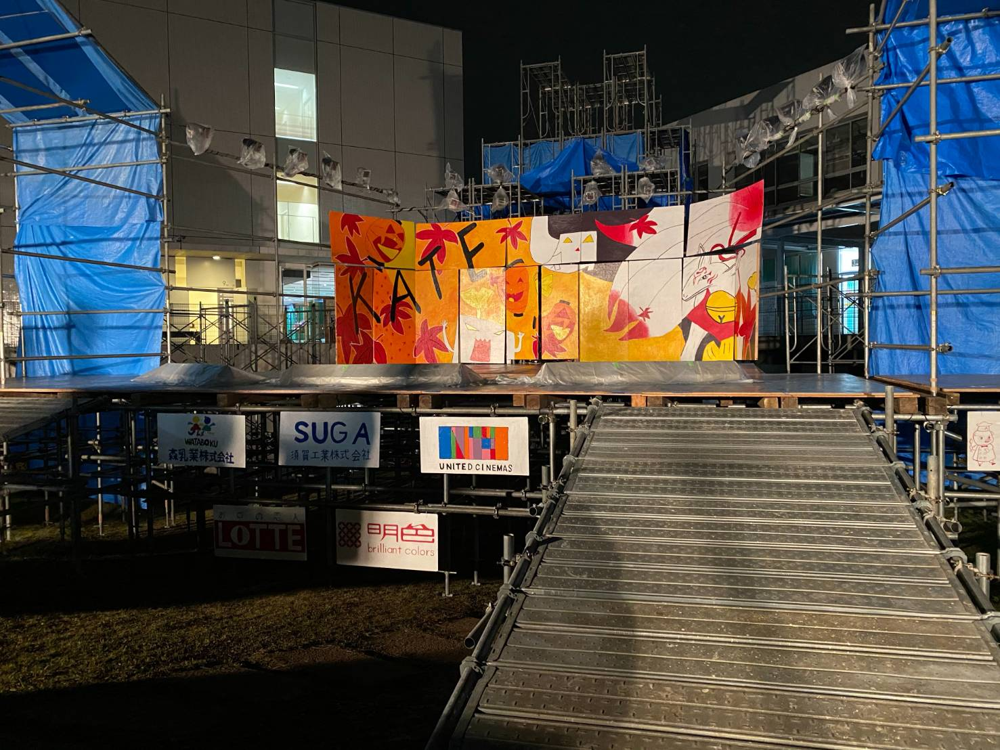

Portfolio Site
とある理系大学で数理情報学を専攻
研究室ではGAN,CNN等を用いた物体検出の研究を行う（予定）です。
データサイエンスにも興味があり、Kaggleに挑戦をしたいと思っています。
そのため東京大学松尾研究室が主催のGCIというデータサイエンス入門講座を受講中
中高大と10年間ソフトテニスを続ける。
（高校では県団体３位、大学では個人関東５位）
大学ではソフトテニスサークルを設立、運営等を行う。
また他キャンパスにあるソフトテニス部では主将を務める
その他にも放送委員会という団体に所属。
動画編集等を行う映像局に所属し、その局長を任される。
文化祭では学生だけで特設ステージの建設などを行った。